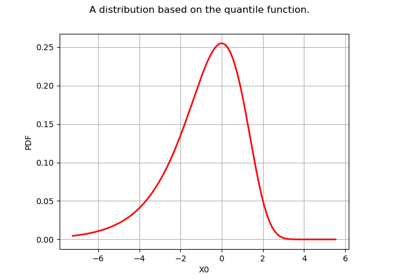
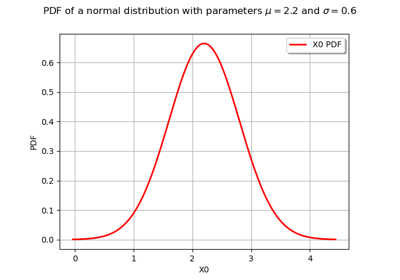
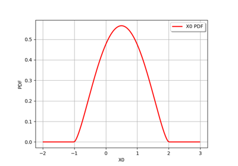

Distributions¶

Create the distribution of the maximum of independent distributions
Create the distribution of the maximum of independent distributions
Create a maximum entropy statistics distribution
Create a maximum entropy statistics distribution


Create your own distribution given its quantile function
Create your own distribution given its quantile function
Create a Bayes distribution



Create and draw scalar distributions
Create and draw scalar distributions


Generate random variates by inverting the CDF
Generate random variates by inverting the CDF

Overview of univariate distribution management
Overview of univariate distribution management